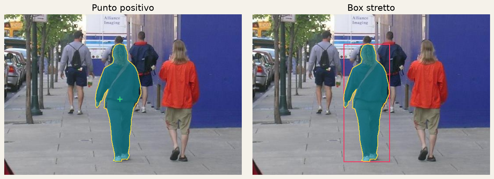
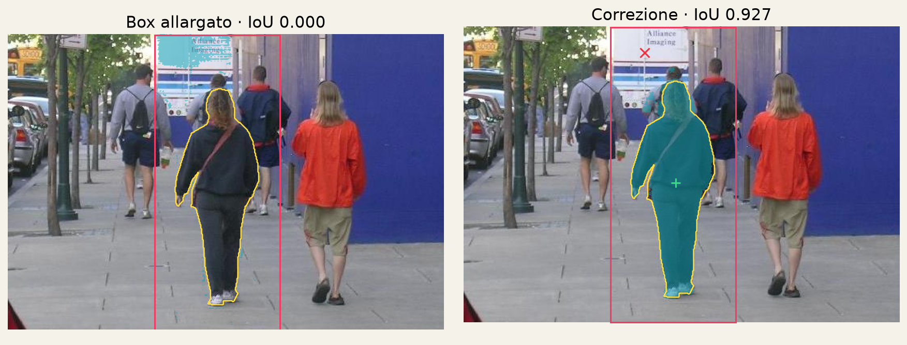
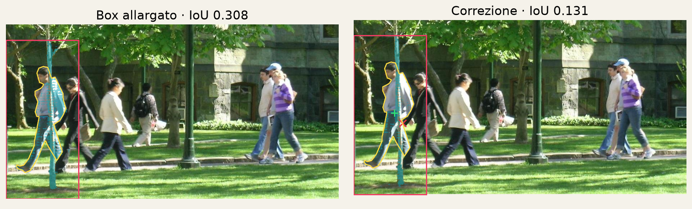
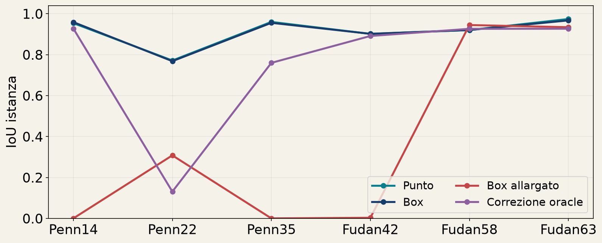
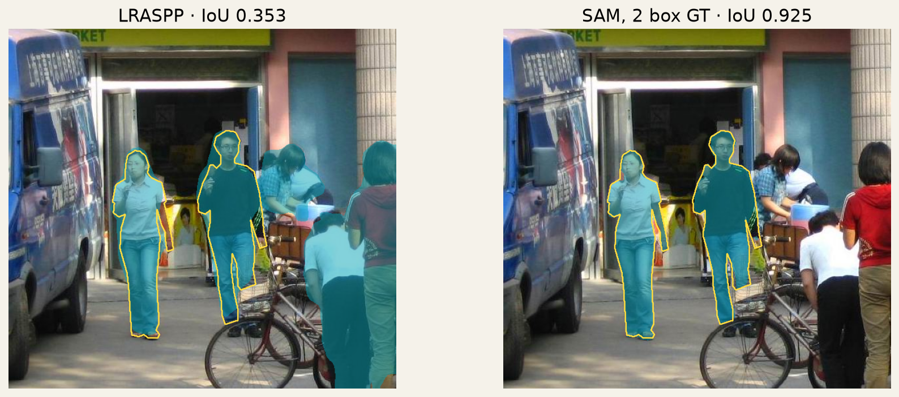

Corsa CPU locale FP32, un thread, realmente eseguita. Questi output sono importati, non nuove misure del dispositivo di chi legge. DINOv3 non eseguito per assenza di checkpoint autorizzato. Sei immagini PennFudan fissate prima delle misure. Prompt derivati dalle annotazioni, assistenza oracle esplicita. Nessun training locale.
| Immagine | LRASPP senza prompt | SAM con box GT | Numero box |
|---|---|---|---|
| PennPed00014 | 0.863500 | 0.949339 | 4 |
| PennPed00022 | 0.664601 | 0.858065 | 5 |
| PennPed00035 | 0.743024 | 0.937546 | 3 |
| FudanPed00042 | 0.352843 | 0.924951 | 2 |
| FudanPed00058 | 0.770804 | 0.916456 | 8 |
| FudanPed00063 | 0.791786 | 0.961390 | 5 |
Metriche: IoU semantica, media semplice per immagine. Confronto di sistemi con diversa informazione in ingresso, non ranking paritario di architetture.

GT giallo, predizione turchese, box rosa, positivo +verde, negativo ×rosso. I punti compaiono soltanto nelle condizioni che li usano.

GT giallo, predizione turchese, box rosa, positivo +verde, negativo ×rosso. I punti compaiono soltanto nelle condizioni che li usano.

GT giallo, predizione turchese, box rosa, positivo +verde, negativo ×rosso. I punti compaiono soltanto nelle condizioni che li usano.

GT giallo, predizione turchese, box rosa, positivo +verde, negativo ×rosso. I punti compaiono soltanto nelle condizioni che li usano.

GT giallo, predizione turchese, box rosa, positivo +verde, negativo ×rosso. I punti compaiono soltanto nelle condizioni che li usano.
Fotografie e annotazioni PennFudan degli autori, impiego didattico. Fonte ufficiale. Record completo con tempi e ambiente.